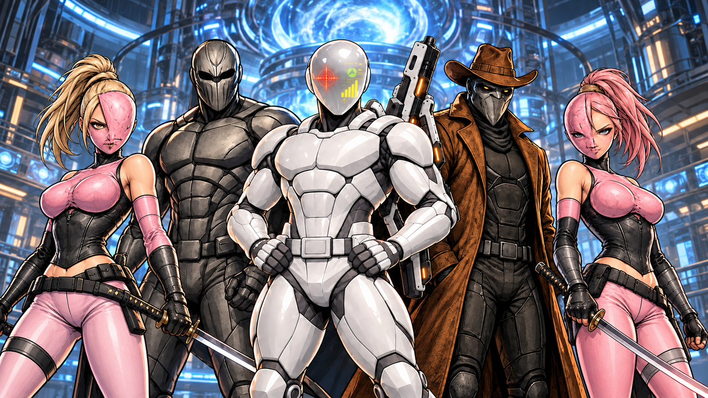

Members
- Bandit — leader
- Quick Draw
- Gunslinger
- Tallahassee & Redback
BackStory
The Society of Rogue is led by Elliot Zaraith (codename—the bandit), a mid-forties quantum physicist who is currently unemployed but formerly the lead of various labs at Notre Dame. His obsession with and delusional theories associated with time travel and changing the supposed wrongs of history made his colleagues quite concerned. It got to the point where other professors would find him crawled up on the floor in one of his lecture halls with a bunch of seemingly incoherent scribbles on the board.
Second in command is a man by the name of Damian Barton, aka Quick Draw, ex-con, current-con, and probably a future one. He may not offer much to the society aside from brute force and muscle, as his 6'8'' stature and 250 lb frame do come in handy when things get tight.
Rico Ramirez packs the firepower and marksmanship for the team. He is ex-military and ex-CIA with one hell of a collection of legally challenged firearms. Despite his arsenal, Rico has a keen knowledge of breaking into places and getting out undetected. A skill set like that comes in handy when attempting to steal the highly expensive & highly classified materials needed for time travel. Rico is known informally by the rest of the team as the Gunslinger.
Tallahassee and Redback round out the team. Redback, Sasha Wilkins, is the wild card and ace in the hole.
Affiliations
All affiliations between Society members and the outside world ended when they decided to form a league of their own. The Society itself is a rogue group of misguided and somewhat conniving vigilantes desperate to make their mark on the world in this life or the last.
Powers & Abilities
All team members possess super suits bought and paid for with stolen money. The team may have a few geniuses, but none have the time or experience to construct suitable armor for war, especially quantum wars. Each member also is armed. Bandit carries a high-caliber rifle, Quick Draw a fully loaded Magnum, and Gunslinger two Smith & Wessons.